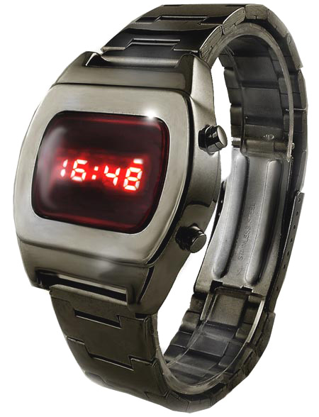
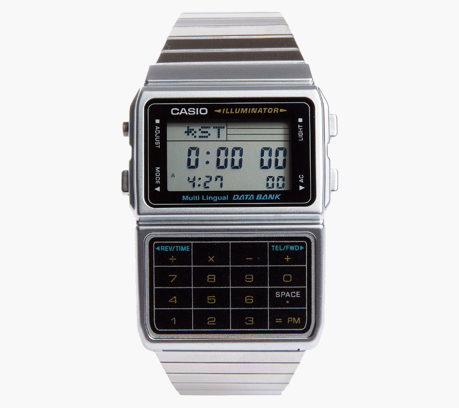

La montre connectée, aussi appelée « montre intelligente » (smartwatch en anglais) est une montre électronique qui intègre des fonctions de communication élaborées : réception-émission d'appels téléphoniques, notifications provenant d'un téléphone mobile, envoi et réception de messages, reconnaissance vocale. Cet objet connecté est la plupart du temps équipé d'un écran tactile qui permet de personnaliser l'affichage en changeant le cadran ; en général, il fait office de compagnon pour les smartphones auxquels il est associé par liaison Bluetooth.
Le concept de la montre connectée remonte au début des années 1980 avec les premiers modèles sortis par les sociétés japonaises Seiko (la Pulsar NL C01) et Casio (la Databank CD-40) qui intégraient une mini-calculatrice et pouvaient stocker des données. Au début des années 2010, le développement des smartphones et des connexions sans fil Bluetooth et Wi-Fi a contribué à relancer le concept de la montre intelligente qui devient en sus connectée. Ces appareils sont dotés de systèmes d'exploitation dont les plus répandus sont ceux de Google (Android Wear), Apple (WatchOS) et Pebble (Pebble OS).
 La plupart des grandes marques d'électronique grand public se lancent : Apple avec l'Apple Watch mais aussi Sony ou Samsung, par exemple. Cependant le marché peine à décoller et ce pour plusieurs raisons. Les consommateurs ont du mal à percevoir la réelle utilité d'une montre connectée, les performances en matière d'autonomie sont encore médiocres par rapport aux montres à quartz classiques, les systèmes d'exploitation ne sont pas assez aboutis et les prix sont élevés. Toutefois, l'arrivée d'Apple en 2015 avec son Apple Watch est un signe fort qui a dopé la visibilité de ces gadgets. Cette année-là, 17 millions de montres connectées ont été livrées dans le monde (source : Juniper Research), dont un peu plus de la moitié portaient la marque à la pomme.